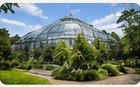
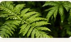
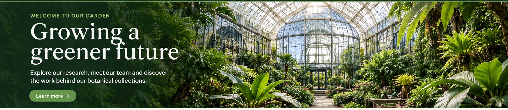

Updates & stories
News from the Garden

March 12, 2026
New research center inaugurated
The new research center brings laboratory and collection teams closer together.

February 28, 2026
International collaboration
The Garden joins a European network dedicated to plant conservation.

June 15, 2025
Summer exhibition: Tropical Wonders
A public exhibition dedicated to tropical plant species and their habitats.

October 03, 2024
Infrastructure renewal completed
Several technical systems were upgraded to improve the reliability of our facilities.
July 22, 2021
Looking back: our first team visit to Amsterdam
In 2021, a small group of colleagues travelled to Amsterdam to meet partner organisations and exchange ideas about collection management. The trip was remembered fondly by the staff who took part.
Emma Laurent later shared a few photographs from the visit in the staff directory.